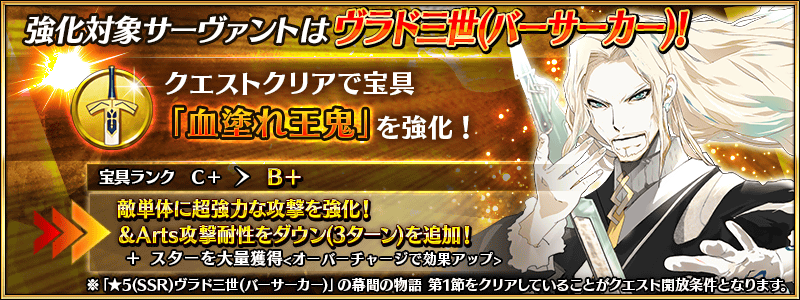
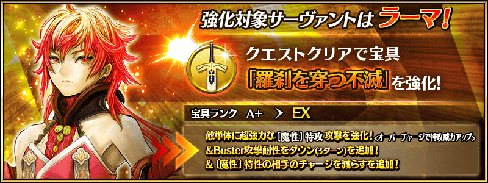
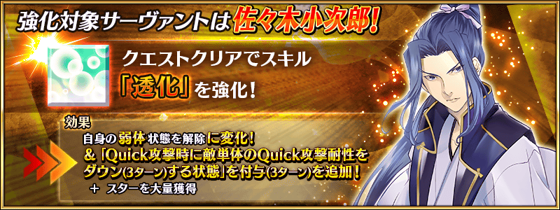
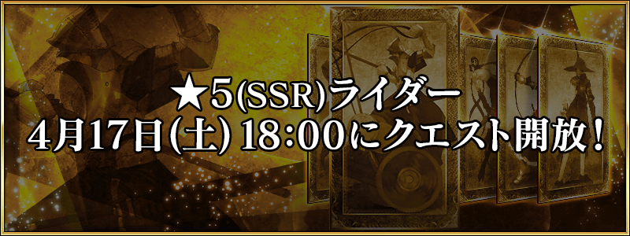
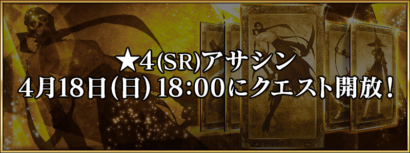
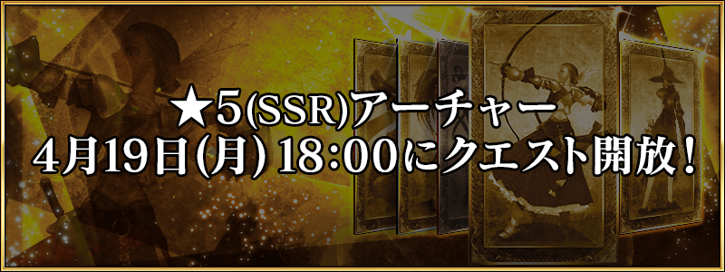
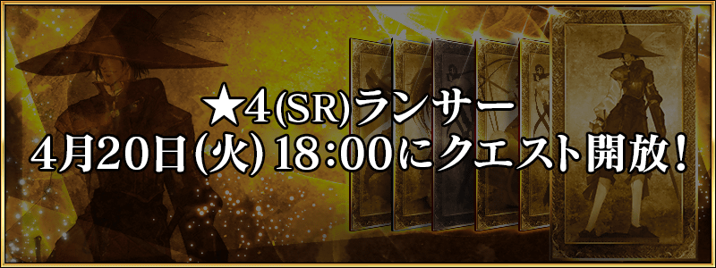
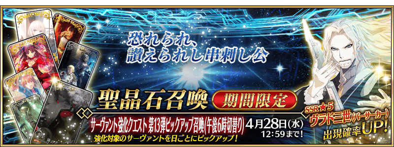

舉辦強化從者能力的特別關卡「從者強化關卡」的第13彈！
本次合計7位從者的強化關卡在迦勒底之門永久追加！
對象從者的強化關卡，會以連續7天在迦勒底之門開放。
不僅進行對象從者的強化，也可獲得聖晶石做為關卡通過報酬。
※從者強化關卡請注意在沒有文字冒險部份。
◆追加時間◆
2021年4月14日(三) 17:00～
◆開放條件◆
持有的強化對象從者，必須使其最終再臨。
※未持有對象從者的話，不會出現關卡。
※關卡沒有舉辦期限。











舉辦期間中，所有從者強化關卡的消耗AP變成1/2！
(就算在戰鬥中撤退的情況，也會是同様的消耗量)
請務必藉此機會，通過尚未通過的從者強化關卡通過吧！
◆舉辦期間◆
2021年4月14日(三) 17:00～4月21日(三) 11:59
其他還有，期間限定「從者強化關卡 第13彈Pick Up召喚(下午5點交替)」同時舉辦！
關於詳情，請自下述橫幅確認。
■「從者強化關卡 第13彈Pick Up召喚(下午5點交替)」詳細情報 